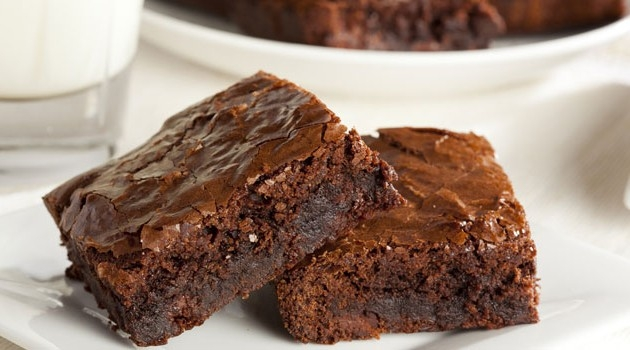

Receita de brownie clássico
INGREDIENTES
- 3 ovos
- 3/4 de xícara de açúcar (135 g)
- 3/4 de xícara de farinha trigo (90 g)
-
1 e 1/2 xícara de cacau em pó ( pode ser nescau também) (180 g)
- 6 colheres (sopa) manteiga (120 g)
MODO DE PREPARO
- Derreta a manteiga.
-
Em uma tigela, acrescente os ovos e o açúcar peneirado e mexa bem
até ficar liso e homogêneo.
-
Em seguida, coloque a manteiga, o cacau em pó ( ou o nescau) e a
farinha de trigo peneirados e mexa bem.
-
Distribua em uma forma untada e polvilhada com nescau (20cm x
20cm).
- Deixe assar no forno em 180° C durante 35 minutos.
INFORMAÇÕES ADICIONAIS
Você poderá servir com uma bola de sorvete de creme, deixara a
experiência ainda melhor :)